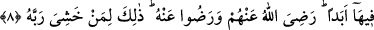

7. İman edip sâlih ameller işleyenlere gelince, halkın en hayırlısı da onlardır.
Bu âyet-i kerimede “sâlih ameller işleyenler” cümlesinde “sâlih ameller” ifâdesi
çoğuldur. “Amilû’/işlediler” ifâdesi de çoğuldur. Çoğulun çoğul ile karşı karşıya
gelmesi bir tek ferdin bütün sâlih amelleri işlemekle yükümlü olmadığı, aksine her
mükellefin bir payı ve nasibi olduğu anlamı çıkar. Zenginin sâlih amelden payı
“vermek”, fakirin ise “almak, sabretmek ve kanâat”tir.
İman ve itâattan oluşan fazilet ve şerefte en üstün derece ile nitelenen kimseler
yaratıkların en hayırlılarıdır.
Bu âyet-i kerimeden “insan”ın “melek”ten daha faziletli olduğu sonucu çıkarılmıştır.
Çünkü âyetteki, “îman denler” ifâdesi ile kasdedilenin “insan” olduğu açıktır. “el-
Beriyye” kelimesi ise melek ve cinne de şâmildir. Hasan Basrî’ye, “Onlar
yaratıkların en hayırlıladırlar.” Âyeti hatırlatılarak, bu âyette geçen kimseler
“meleklerden de mi daha hayırlıdırlar?” diye sormuşlar. Hasan Basrî; “Yazık sana!
Melekler îman edip sâlih amel işleyenlere nasıl eşit olsunlar” diye cevap vermiştir.
Güzelce ibâdet etmenin meleklere ne faydası var?
Aşkın feyzi sâdece insan üzerine dökülmüştür.
8. Onların Rableri katındaki mükâfatları, zemininden ırmaklar akan, içinde
devamlı olarak kalacakları Adn cennetleridir. Allah kendilerinden hoşnut olmuş,
onlar da Allah’tan hoşnut olmuşlardır. Bu söylenenler hep Rabbinden korkan (O’na
saygı gösterenler) içindir.
“Rableri katında onların” îman ve itâatlarına karşılık “mükâfatları altlarından
ırmaklar akan Adn cennetlerine girmekdir.”
Âyet-i kerimedeki “adn” kelimesinin anlamı ikamet etmek ve devam etmek demektir.
İbn Mes’ûd’a göre Cennetin ortasıdır. Altlarından yâni ağaçlarının altından ırmaklar
akıp gider, zira akarsuyu olmayan bahçe, bahçe olmaz.
el-İrşâd’da deniliyor ki: “Eğer “cennât” kelimesi ile, dalları birbirine girmiş
“ağaçlar” kasdedilmişse, bu takdirde “onların altından ırmakların akması”nın ne demek
olduğu gâyet açık anlaşılmaktadır. Şâyet bu kelime ile, arz ve üzerindekilerin tümü
kasdediliyorsa o zaman “ırmakların altlarından akması” demek, “o cennetlerin” bir
kısmının altından akması demektir. cennetler kelimesi ile bu iki mânâdan hangisi
kasdedilirse edilsin ırmakların cennetlerin altından akması ile kasdedilen, onların kanal
olmadan akmalarıdır. “Cennât” kelimesinin çoğul olarak getirilmesi, her mükellefin